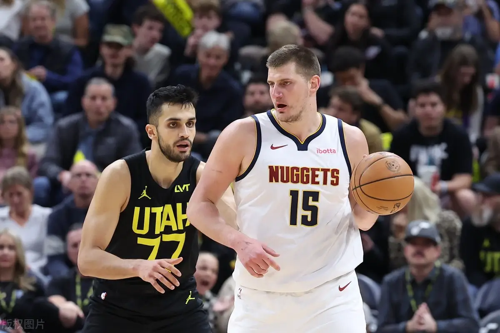
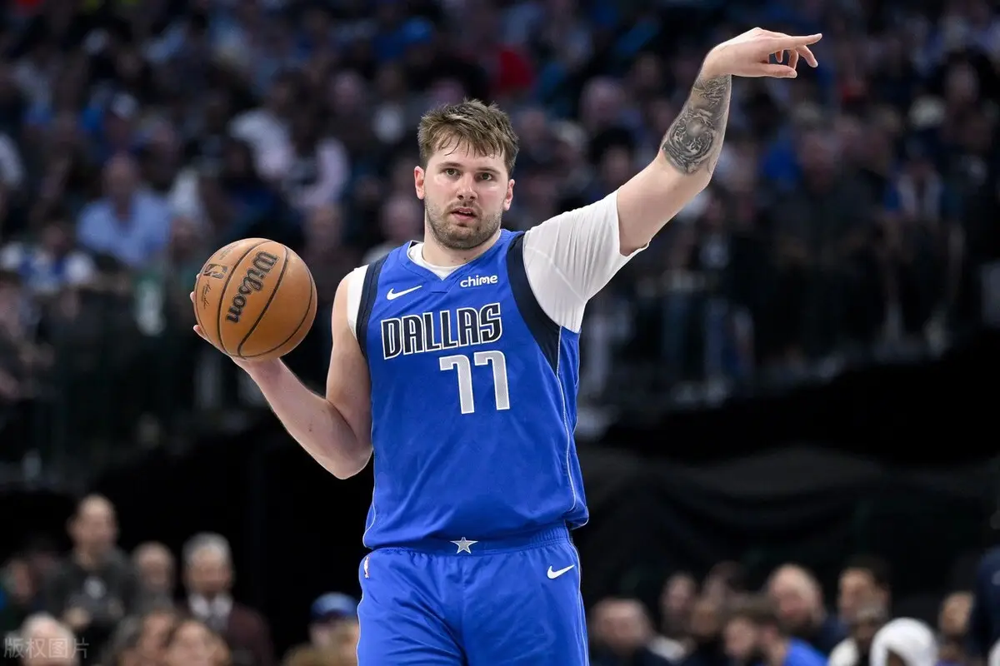
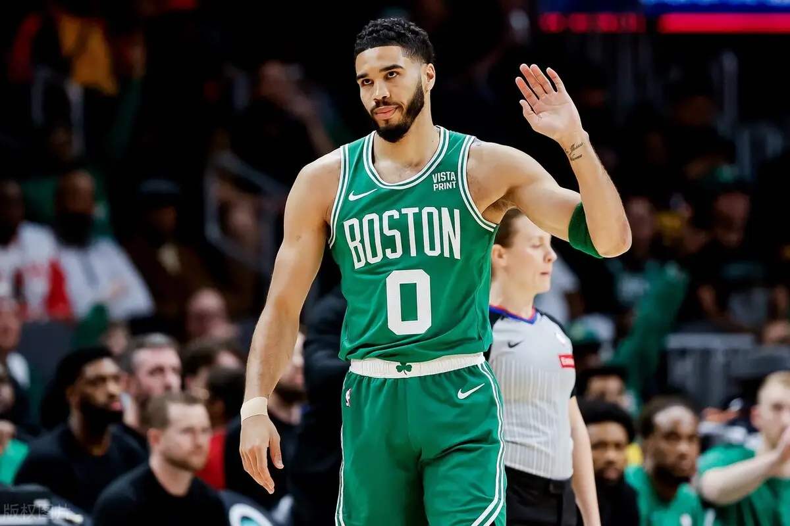

As the 2023-24 NBA regular season comes to an end, Nikola Jokic is at the top of the list. The Denver Nuggets big man and two-time NBA MVP is preparing for his third season as he leads the defending champions to another playoff berth and a chance to defend their title.
Nikola Jokic | Center | Denver Nuggets

Last week's stats: 26.5 points, 11.5 rebounds, 7.7 assists
Stats for the season: 26.4 points, 12.4 rebounds and 9.0 rebounds
Nikola Jokic's consistency this season and his ability to win games for the Nuggets every time he takes the floor is undisputed.
His averages are in the top ten this season, which puts him firmly at the top of the list. With his abundant form guaranteed to make the playoffs, look for the Serbian to claim his third NBA MVP trophy.
Luka Doncic | Guard | Dallas Mavericks

Last week's stats: 34.0 points, 10.5 rebounds, 9.5 assists
Stats for the season: 33.9 points, 9.2 rebounds, 9.8 assists
The Dallas Mavericks are ranked fifth this season, with Luka Doncic's offensive prowess being a major reason for their success this season.
He played a key role in the team's 16 wins in 18 games, helping the Mavericks lock in a playoff date with the Los Angeles Clippers. He may have played fewer games this season than Tatum and Nikola Jokic, but his production rate is better than those two.
Jayson Tatum | Forward | Boston Celtics

Last week's stats: 20.0 points, 4.5 rebounds, 6.5 assists
Stats for the season: 26.9 points, 8.1 rebounds, 4.9 assists
Jayson Tatum has missed the Boston Celtics' last two games, causing him to slip a little further down the NBA MVP ladder.
Boston is the team with the best record in the league this season and is also the favorite to win the championship. Their last championship was in 2008. Tatum has played in 74 of the 82 games this season.
He was the main reason the team locked up the No. 1 seed in the Western Conference.